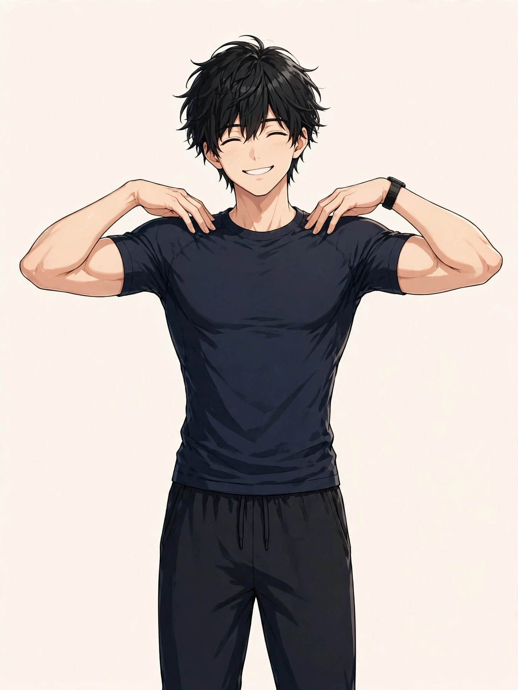

東三国で新年度の通勤と環境変化に気になる肩こり
男性の要因整理とセルフケア、受診の目安

新年度の東三国・淀川区では、新しい職場や部署への通勤が始まり、電車の混み具合や乗り換えの動線、デスクの位置まで、毎日の過ごし方が一気に入れ替わります。新しい環境に慣れるまでのあいだ、肩こりを感じることはありませんか。肩こりとは、肩や首のまわりが重く感じる、張った感じがする、動かしにくい感じがする、といった感じ方を指す言葉として使われることが多いです。新年度は、通勤時間の変化と環境の変化、慣れない作業の進め方が重なり、肩こりを感じやすい時期になると言われています。このコラムでは、新年度の通勤と環境変化に肩こりが気になる男性へ、要因の整理、新年度の過ごし方とセルフケア、受診を考える目安についてお伝えします。
新年度の通勤と環境変化に気になる肩こりとは
肩こりとは、肩や首のまわりが重く感じる、張った感じがする、動かしにくい感じがする、といった感じ方を指す言葉として使われることが多いです。肩こりの一般的なとらえ方は、肩こりの症状ページでも紹介しています。
肩こりの現れ方は、ひとつの原因だけで説明できるものではありません。通勤の時間や乗り換えの回数、デスク環境、睡眠の様子などが関わっていると言われています。新年度は、こうした要素が重なりやすい時期です。肩の重さを感じたら、その日の過ごし方を振り返ってみることが、セルフケアの出発点になります。緊張が集まりやすい位置は図のとおりです。

肩こりは、首の付け根から肩甲骨まわりにかけて自覚されることが多いとされます。位置は目安です。
考えられる要因
新年度の通勤と環境変化に肩こりが気になりやすくなる背景は、ひとつとは限らず、いくつかの要因が重なっている場合もあります。ここでは一般的に挙げられるものを整理しますが、特定の原因を断定するものではありません。
- 通勤時間の変化：新しい職場や部署への通勤で、電車に乗る時間や乗り換えの回数が変わること。御堂筋線の朝の混み具合のなかで立ちっぱなしの時間が長くなると、肩に力が入ったまま過ごす時間が長くなります
- 通勤バッグの重さ：新しい職場への持ち物が増え、パソコンや書類の入ったバッグが重くなること。片方の肩だけでバッグを持ち続けると、肩への負担が偏りやすくなります
- 新しいデスク環境：新しい席では、机の高さや椅子の位置、画面の角度がこれまでと違うこと。慣れない姿勢で画面を見続ける日が増えると、肩や首のこわばりを感じやすくなると言われています
- 慣れない作業と緊張：新しい仕事の進め方や、覚えることの多さで、気持ちが張ったまま過ごす日が増えること。緊張したまま過ごす時間が長いと、肩に力が入ったままになりやすくなります
- 人間関係の変化：新しい上司や同僚、お客さまとの関係づくりが始まること。気を遣う場面が増える日は、肩をすぼめた姿勢が続くこともあります
- 生活リズムの変化：起きる時間や寝る時間が変わり、朝の支度が慌ただしくなること。睡眠のリズムがずれると、朝起きたときに肩の重さを感じやすくなると言われています
- 運動量の変化：新しい通勤ルートでは、歩く距離や階段の上り下りが変わること。体を動かす時間が少ない日が続くと、肩の重だるさを感じやすくなると言われています。デスクワークの日の肩こりについては、コラム「東三国でデスクワークの肩こりが気になる男性へ｜考えられる要因とセルフケア、受診の目安」もあわせてご覧ください
新年度の過ごし方とセルフケア
新年度のセルフケアは、通勤と新しい環境に体を慣らす工夫と、帰宅後の過ごし方を整えることが中心になります。試しやすいものを挙げます。
- 通勤バッグを見直す：バッグの中身を整理し、重いものは職場に置く、リュックに替える、両手で持つ、といった工夫が役立ちます。電車のなかでは、バッグを足元に置いて肩を休ませる時間を入れましょう
- 電車のなかで肩の力を抜く：立ちっぱなしの時間は、つり革を持つ手をときどき替え、肩を一度上げてストンと下ろす小さな動きを挟みましょう。座れた日は、背もたれに背中を預けて肩の力を抜く時間を入れてみてください
- 肩回しを朝と帰宅後の習慣にする：起きたときと帰宅したときに、両手の指先を肩にのせ、肘で円を描くように回す肩回しを数回行いましょう。肩回しの手順の目安は図2のとおりです。痛みや引っかかりを感じるときは無理をしないでください
- デスク環境を整える：新しい席では、画面の高さや椅子の位置を自分の体に合わせてみましょう。30分ごとに立ち上がる時間を入れ、両腕をゆっくり回す、肩甲骨を寄せるように胸を開く、といった小さな動きを挟むと、肩の重だるさを感じにくくなります
- 帰宅後に温かい飲み物をとる：帰宅したら、温かいお茶や白湯を飲みながらゆっくり過ごす時間を入れましょう。体を温めるものをとると、体が温まりやすくなります
- ぬるめのお湯にゆっくりつかる：新しい環境に慣れるまでのあいだは、シャワーで済ませず、ぬるめのお湯に浸かって肩まで温めましょう。湯船のなかで両腕をゆっくり回す、肩甲骨を寄せるように胸を開く、といった小さな動きを挟むと、さらに体が温まります
- 肩こりの様子を簡単に記録する：「何時に起きて、どんなふうに感じたか」「通勤のあとはどうだったか」などを手帳に書き留めると、次の新年度の過ごし方の備えに役立ちます
セルフケアは一度に全部をやろうとせず、続けられそうなものを一つ選ぶところから始めるのがおすすめです。肩回しの手順の目安は図2のとおりです。

①両手の指先を肩にのせる ②肘で円を描くように回す ③前回し・後ろ回しを数回ずつ行います。痛みや引っかかりを感じるときは無理をしないでください。
受診を考える目安
セルフケアを続けても、肩こりと一緒に気になる変化がある場合は、早めに医療機関を受診してください。肩や腕のしびれがある、痛みが強い、頭痛やめまいが続く、といった状態がある場合は、自己判断で様子を見るのではなく、整形外科などの医療機関に相談することが大切です。
肩こりが長く続き、セルフケアを続けても変わらない場合も、医療機関に相談してみてください。受診のときに伝えることも、まとめておくと役立ちます。肩こりを感じる時間帯（朝起きたとき・通勤のあと・夕方）、肩こりの感じ方、続いている期間、睡眠の様子、新年度の通勤の様子をメモしておくと、医師に伝えやすくなります。首のこわばりについては、首こりの症状ページもあわせてご覧ください。気になる変化を書き留めておくと、受診のときに役立ちます。
北辰堂のご案内
北辰堂は、大阪市淀川区東三国二丁目にある男性専用の整体院です。施術歴30年の平賀伸人（鍼灸師・国家資格）が、整体とリラクゼーションを行います。当院では鍼灸施術は行いません。営業は平日・土曜17:00〜22:00、日曜10:00〜22:00の完全予約制です。料金は60分 初回2,000円／2回目以降6,000円、90分 初回3,000円／2回目以降9,000円で、お支払いは現金のみです。プライバシーへの配慮のため、詳しい住所はご予約確定後にLINEでご案内します。
料金は60分 初回2,000円／2回目以降6,000円、90分 初回3,000円／2回目以降9,000円で、お支払いは現金のみです。施術を受けたからといって肩こりの状態がどうなるかをお約束することはできませんが、その日の体の状態を確認しながら、ゆっくり体を預けられる時間をご用意しています。
コースの内容はメニュー・料金、施術者は施術者について、気になるお悩みの例は北辰堂について、ご予約の流れは当日の流れとLINE予約の下書きづくり、場所についてはアクセスをご覧ください。あわせて疲労感と腰の重さについてのコラムやデスクワークの肩こりについてのコラム、よくある質問もご参考ください。
ほかのコラム記事
関連する疾患別ページ
ご予約・ご相談はLINEから
東三国・新大阪・淀川区周辺で、体のケアの相談先をお探しの方は、LINE公式アカウント（北辰堂）からお気軽にご連絡ください。現在の状態をお聞きしたうえで、施術の進め方をご案内します。
LINEで予約するさらに学びたい方へ：現場で使われる専門書（PR）
このページのテーマに合わせて選んだ本と、当店の施術でも参考にしている専門書です。


※本ブロックのリンクはAmazonアソシエイト・プログラムおよび楽天アフィリエイトによる広告リンクです。使用感の保証をするものではありません。